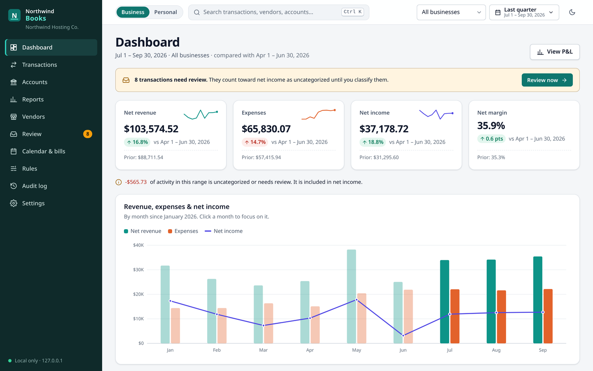
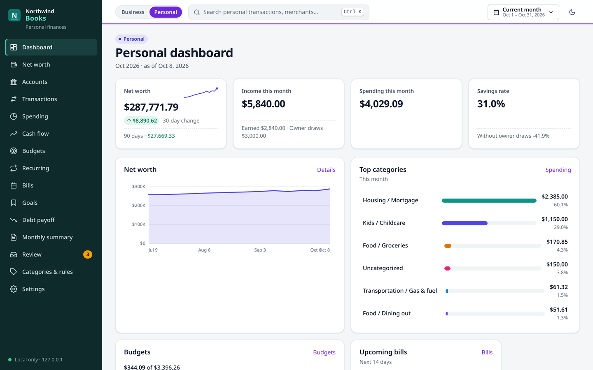
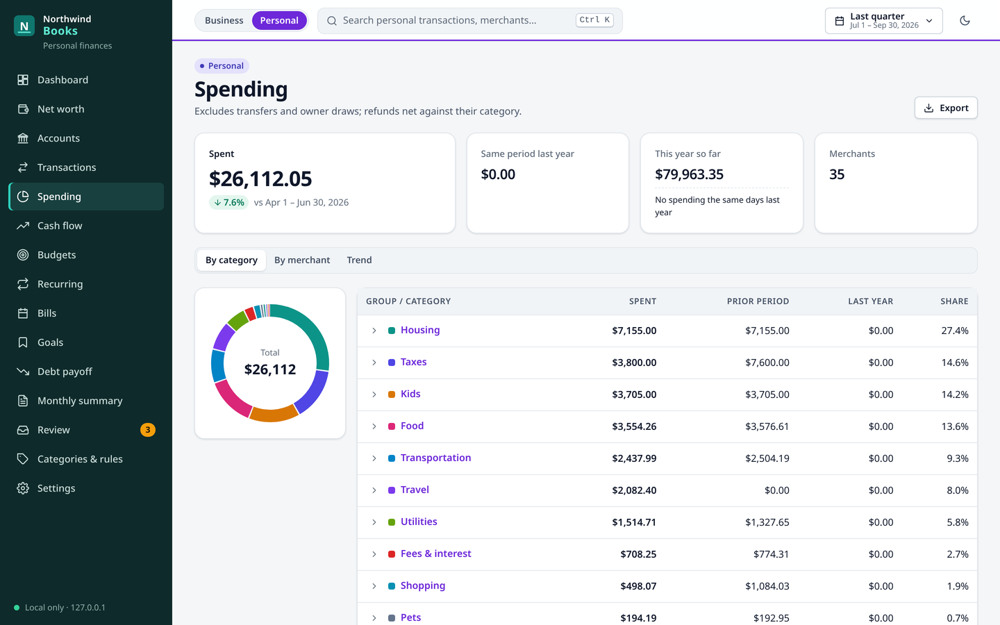
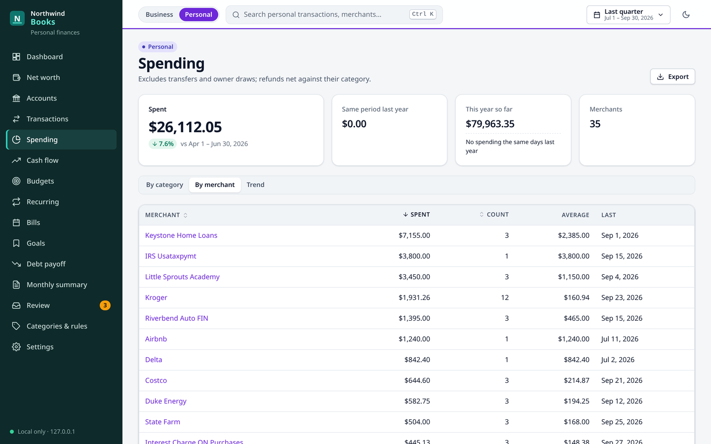
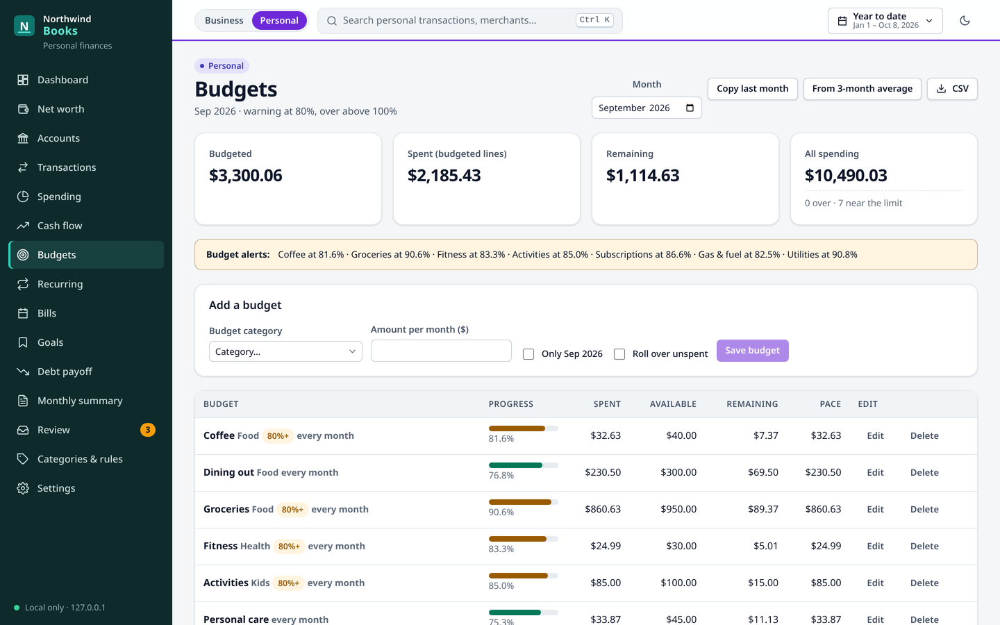
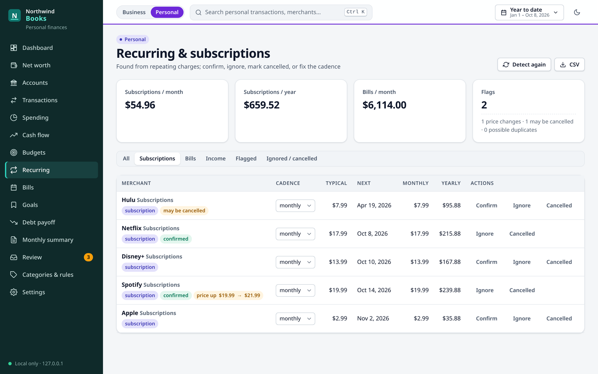
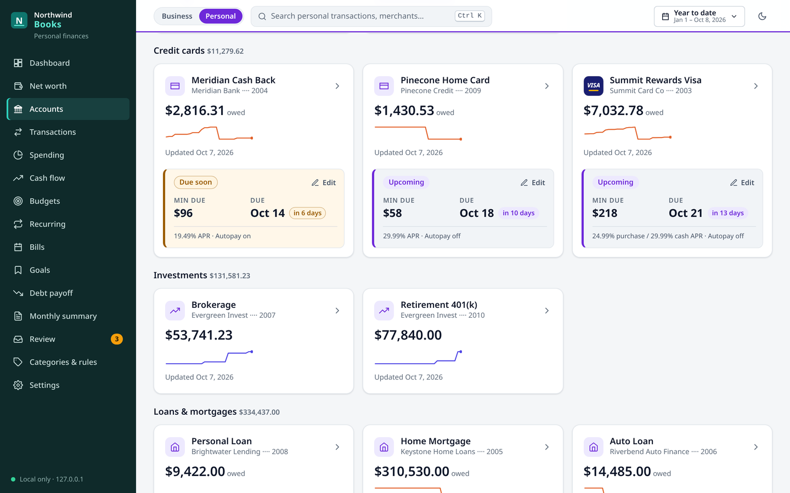
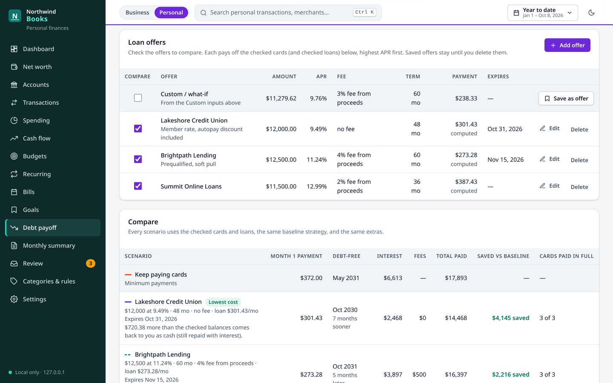

Import
Transactions from the Finance connector, Capital One and Apple Card CSVs, store-card statement PDFs, and Monarch exports. Re-imports never duplicate, and pending rows are matched to their posted versions.
Open source · runs on your own computer
hpbooks imports your bank and card transactions, sorts them with rules you control, and gives you a P&L for the business and net worth, budgets, and bills for the household. In one encrypted database, with nothing sent anywhere.

Transactions from the Finance connector, Capital One and Apple Card CSVs, store-card statement PDFs, and Monarch exports. Re-imports never duplicate, and pending rows are matched to their posted versions.
Priority-ordered rules, "create a rule from this", a review inbox with suggestions, bulk edits with undo, and transfer matching. Your manual decisions are never overwritten.
P&L by month or by business, cash flow, expenses by vendor, owner draws, a Schedule C-style summary, and a reconciliation. Export to CSV, XLSX, and PDF.
Every card and loan with its minimum payment, due date, APR, and autopay, plus what's due in the next 30 days and anything overdue.
Run more than one business in a single ledger, each with its own label and colour, and see them side by side.
hpbooks update check tells you when there's a new version; updates only fast-forward and never touch your data or config.
One database, two sets of books. A Business | Personal toggle in the header switches between them, and every account belongs to one side.
Everything lives in one SQLCipher-encrypted file. The key sits in a mode-600 file on your computer and is never printed or committed.
The web app listens on 127.0.0.1 and nothing else. For your phone or laptop, optional Tailscale access adds a host allowlist and a passphrase.
The app makes no third-party requests and no network calls for ledger data. Transactions arrive as files saved on your computer, and stay there.
Paste this into a chat:
Install the books app from https://github.com/jclarke/grok-books on your computer and set it up for me.It clones the repository, creates the database key without ever showing it, writes your config, creates the database, starts the web app, and runs the tests.
Your company name, your timezone, whether you want business books, personal, or both, your businesses and categories, and which accounts to bring in from the Finance connector you've linked in Grok Bot.
Grok Bot can also run the sync and the update check on a schedule.
On the computer where the books run, go to http://127.0.0.1:8765. To open it from elsewhere, ask Grok Bot to set up Tailscale for your books.
Prefer to do it yourself? The install steps are in the README.
From a demo ledger with invented data ("Northwind Hosting Co." and a fictional household). None of it is real.






